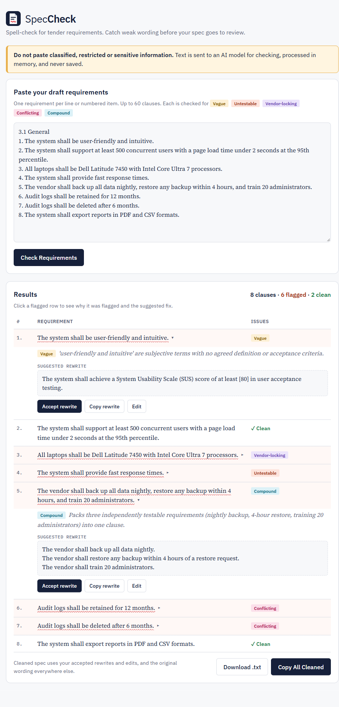

The system shall be user-friendly.
Subjective wording with no agreed meaning. Two bidders will price two different products.
Tender specification linter
Paste the requirements section of a tender or statement of work. SpecCheck reads every clause, flags the ones that are vague, untestable, vendor-locking, conflicting or compound, and suggests a rewrite you can accept in one click.
Suggested rewriteA first-time user, given no more than [X] minutes of training, shall complete [defined core task] unaided within [Y] minutes.
The problem
Engineers and project officers drafting their first tender specs write requirements that read fine to them but can't be priced, tested or fairly competed.
Those weak clauses get caught late: in review, in vendor clarification questions, or at acceptance testing, when it's expensive to change them. Reviewers spend their time on basic wording instead of substance, and a single vague “shall” can turn into a contract dispute.
A keyword list catches “user-friendly” or “etc.”. It can't judge whether “support 500 users” is testable, whether two clauses twelve pages apart contradict, or whether a spec quietly describes one supplier's product. That judgement is what SpecCheck uses an LLM for.
What it checks
The system shall be user-friendly.
Subjective wording with no agreed meaning. Two bidders will price two different products.
The system shall provide fast response times.
No pass/fail check exists at acceptance. SpecCheck asks for a number and a measurement condition.
All laptops shall be Dell Latitude 7450.
A brand name, or a spec only one supplier can meet, shrinks competition and invites challenge.
Retain logs for 12 months … delete logs after 6 months.
Two clauses can't both be met. The whole list is checked in one pass so contradictions far apart are caught.
Back up nightly, restore within 4 hours, and train 20 administrators.
Three requirements in one “shall”. One can pass while another fails. The rewrite splits them.
Good requirements get a green ✓ and are left alone. Precision matters more than catching everything.
How it works
Nothing is stored: no database, no browser storage, and pasted text is never logged. Don't paste classified or sensitive material, because text is sent to the model provider for checking.

Evidence
We built a labelled set of 40 requirements: 20 valid clauses in the style of public ICT and facilities tenders, and 20 flawed ones written by hand, four per flag. The eval checks all 40 as one document, just as the app does, and scores precision and recall per flag. Our target was ≥ 80% recall and ≥ 70% precision.
| Prompt (deepseek-v4-flash) | Precision | Recall | Runs done | Tagging | Missed every run |
|---|---|---|---|---|---|
| strict | 100% | 95% | 3 / 3 | Right tag on every catch | 1 vendor-lock (a vendor-owned data centre) |
| baseline | 100% | 95% | 3 / 4 | Often called untestable clauses “vague” | 1 side of a conflicting pair (log retention) |
| Model (strict prompt) | Precision | Recall | False alarms | Runs | Missed |
|---|---|---|---|---|---|
| deepseek-v4-flash | 100% | 95% | 0 | 3 | 1 vendor-lock (a vendor-owned data centre) |
| kimi-k3 | 100% | 100% | 0 | 1 | none |
We ship the strict prompt. Both prompts caught the same clauses with no false alarms. But the baseline prompt often gave the wrong tag, which means a weaker rewrite. It showed only one half of a conflict, and it timed out once. We also switched the default model to deepseek-v4-flash. Its precision matched kimi-k3's, which is the number our riskiest assumption depends on, and it was faster. It missed one vendor-lock clause that kimi-k3 caught.
Our first eval attempt produced no results at all: every 40-clause kimi-k3 call ran past the 60-second limit, so we raised it to 5 minutes for the eval. Both prompts scored 100% precision, so this set is too clean to show whether the strict prompt cuts nitpicks. The next version needs borderline clauses. A 40-clause check still takes 1–4 minutes, more than the app allows, so the app is built for short pastes today.
Team
Paste a draft requirements section and see flags in seconds for a short list.